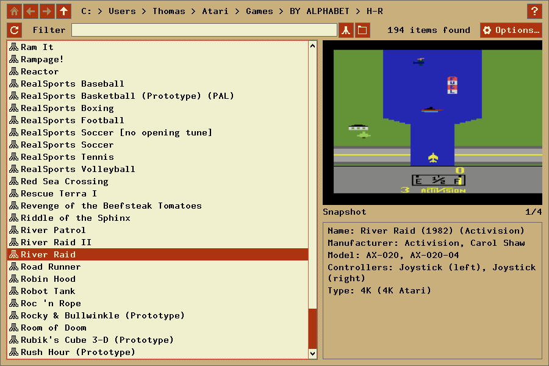
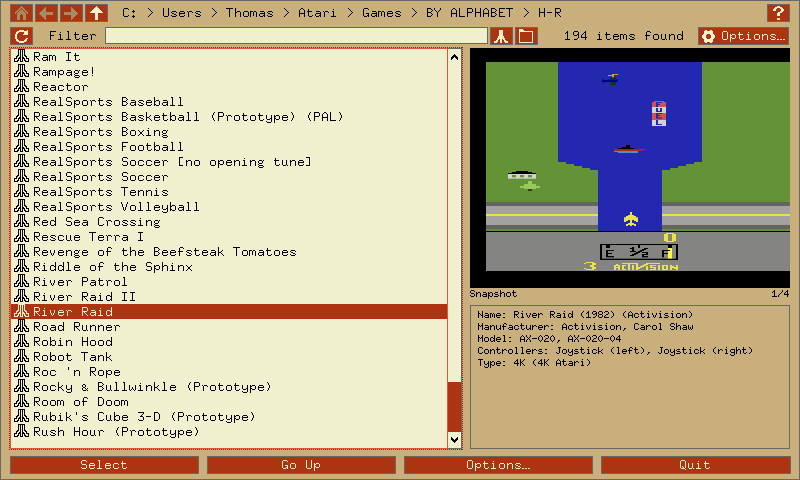
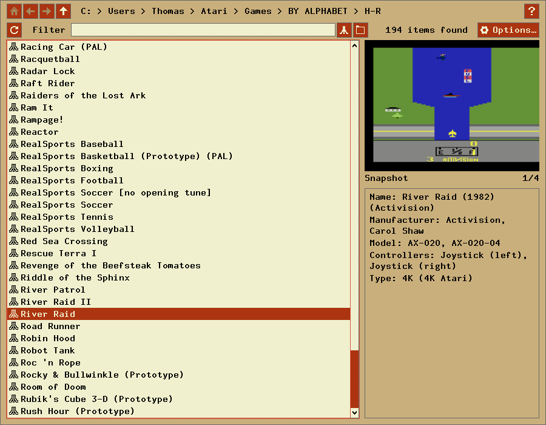
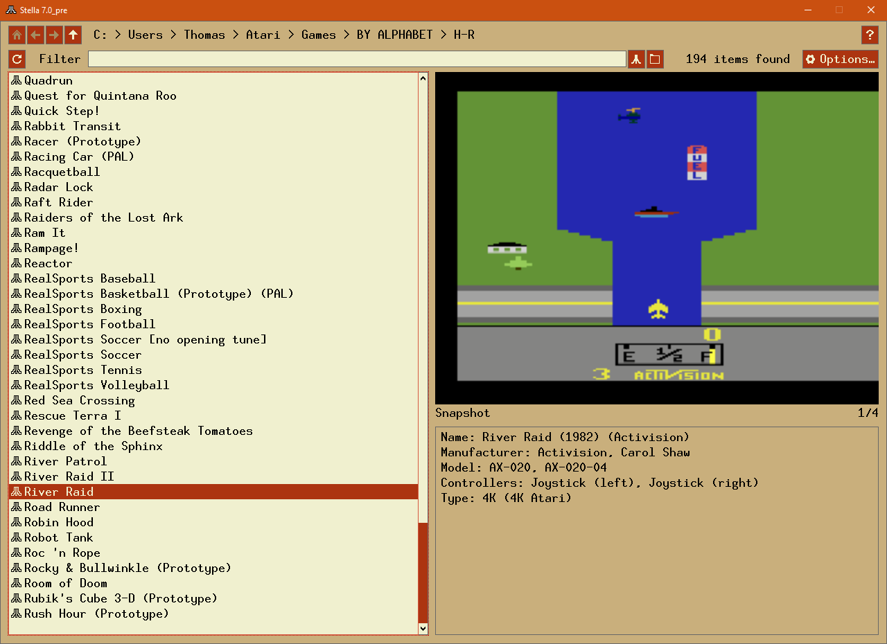

Stella
A multi-platform Atari 2600 VCS emulator
Release 3.2.2
User's Guide
- A Brief History of the Atari 2600
- Introduction
- Getting Started
- Advanced Configuration
- Acknowledgments
- License and Disclaimer
February 1999 - August 2010
The Stella Team
Stella Homepage
 In the early 1970's, video arcade games gained commercial success for the
first time. The American public was introduced to Pong, Tank, and other
interactive video games which populated amusement parks, bars, and arcades.
The games were successful enough to create interest for home versions, so in
1975 Atari released Home Pong and it was a smash hit. Other companies such as
Magnavox and Coleco followed suit and released their own dedicated console
games. Then in 1976, Fairchild Camera and Instrument introduced the Channel F
system, the first cartridge based home video game system. The industry
recognized that cartridge systems were the future of video gaming, and began
development in that direction. In January 1977, RCA released the Studio II,
another cartridge based system, although it only projected in black and white
and seemed to be focused on educational titles. Then, in October 1977, Atari
released the Atari VCS (Video Computer System) with an initial offering of nine
games. This system, later renamed the Atari 2600, took the industry by storm
and dominated the marketplace for years to come.
In the early 1970's, video arcade games gained commercial success for the
first time. The American public was introduced to Pong, Tank, and other
interactive video games which populated amusement parks, bars, and arcades.
The games were successful enough to create interest for home versions, so in
1975 Atari released Home Pong and it was a smash hit. Other companies such as
Magnavox and Coleco followed suit and released their own dedicated console
games. Then in 1976, Fairchild Camera and Instrument introduced the Channel F
system, the first cartridge based home video game system. The industry
recognized that cartridge systems were the future of video gaming, and began
development in that direction. In January 1977, RCA released the Studio II,
another cartridge based system, although it only projected in black and white
and seemed to be focused on educational titles. Then, in October 1977, Atari
released the Atari VCS (Video Computer System) with an initial offering of nine
games. This system, later renamed the Atari 2600, took the industry by storm
and dominated the marketplace for years to come.
 Because of oversupply, the Christmas season of 1977 was very rough on the
video game industry, and the Atari 2600 was the only system that managed to
emerge unscathed. Atari enjoyed strong sales in 1978 and a fantastic holiday
season, as Atari released more games such as Outlaw, Spacewar, and Breakout.
Internally however, Atari was at odds. Nolan Bushnell, the inventor of pong and
founder of Atari, wound up leaving the company and purchased Pizza Time Theater,
which later became the successful Chuck E. Cheese! In 1979 Atari continued
their trend and released 12 more games which met with continued success.
However, Atari was now facing some stiffer competition from the Mattel
Intellivision and the Magnavox Odyssey2.
Because of oversupply, the Christmas season of 1977 was very rough on the
video game industry, and the Atari 2600 was the only system that managed to
emerge unscathed. Atari enjoyed strong sales in 1978 and a fantastic holiday
season, as Atari released more games such as Outlaw, Spacewar, and Breakout.
Internally however, Atari was at odds. Nolan Bushnell, the inventor of pong and
founder of Atari, wound up leaving the company and purchased Pizza Time Theater,
which later became the successful Chuck E. Cheese! In 1979 Atari continued
their trend and released 12 more games which met with continued success.
However, Atari was now facing some stiffer competition from the Mattel
Intellivision and the Magnavox Odyssey2.
 Atari needed a mega-hit in 1980 in order to squash the competition, and they
found it in the home version of a game from Japan called Space Invaders. It was
so popular that people were buying the Atari 2600 just so they could play Space
Invaders at home. Following that, Atari released Adventure, which was the first
video game to contain an Easter Egg - placing an object in a certain area
revealed the programmer's name, Warren Robinett. 1980 was important for another
reason - the creation of the first ever third party software producer, Activision.
The company was formed by four Atari employees who were unsatisfied with the
working conditions at the company. They released four games initially: Dragster,
Fishing Derby, Checkers and Boxing. The games were very well received by the
public, and revealed that the Atari 2600 was capable of better games than
Atari themselves had been producing. Atari tried to prevent Activision from
selling games, but they failed and Activision grossed $70 million that year.
Atari needed a mega-hit in 1980 in order to squash the competition, and they
found it in the home version of a game from Japan called Space Invaders. It was
so popular that people were buying the Atari 2600 just so they could play Space
Invaders at home. Following that, Atari released Adventure, which was the first
video game to contain an Easter Egg - placing an object in a certain area
revealed the programmer's name, Warren Robinett. 1980 was important for another
reason - the creation of the first ever third party software producer, Activision.
The company was formed by four Atari employees who were unsatisfied with the
working conditions at the company. They released four games initially: Dragster,
Fishing Derby, Checkers and Boxing. The games were very well received by the
public, and revealed that the Atari 2600 was capable of better games than
Atari themselves had been producing. Atari tried to prevent Activision from
selling games, but they failed and Activision grossed $70 million that year.
By 1981, the video game industry was basically a horse race between the 2600
and the Intellivision. While the Intellivision was technologically superior in
some respects, the 2600 continued to lead in sales. Atari released the home
version of Asteroids, which was a huge success. Inspired by the success of
Activision, another software development group called Imagic was formed. They
would not release any games until 1982 however. Another company, Games by Apollo,
was formed in Texas and released several games that year.
Coleco entered the market in 1982 with the release of the graphically
superior Colecovision. To combat this new system, Atari produced the 5200,
a technologically comparable system. The 2600 dropped $100 in price in order
to remain competitive. Then a company called Arcadia released a peripheral
called the Supercharger which played games in an audio cassette medium. This
allowed for multiple loads and expanded the 2600's capabilities.
 Atari released Pac-Man and E.T. that year, two incredibly hyped games which
were critical flops.
Although Pac-Man sold many copies, it was considered to be a poor
translation of the arcade hit. However, there were many fantastic games
produced for the 2600 during this period, and it was still selling strong.
Atari released Pac-Man and E.T. that year, two incredibly hyped games which
were critical flops.
Although Pac-Man sold many copies, it was considered to be a poor
translation of the arcade hit. However, there were many fantastic games
produced for the 2600 during this period, and it was still selling strong.
Ever since the inception of Activision, Atari had been fighting to keep third
parties from producing cartridges which they felt were stealing profits from
them. Finally the issue was settled when Atari agreed to allow third party
manufacturing in exchange for a royalty. Suddenly software companies began
popping up all over, and 1982 saw releases from companies like Venturevision,
Spectravision, Telesys, CBS, 20th Century Fox, US Games, M Network, Tigervision,
Data Age, Imagic and Coleco. There was even a company that released a line of
X-Rated games for the 2600 called Mystique. The year was financially successful
for Atari, however there seemed to be a glut of software. Although there were
many quality titles still produced, there was an increasing number of rushed
games as manufacturers attempted to cash in on the craze.
More companies jumped on the band wagon in 1983. Zimag, Ultravision, Amiga,
and others were also producing games and peripherals. It seemed as if there was
just too much product to meet the demand, and as it turned out there was. By
the end of the year, companies began folding. US Games, Data Age, Games by
Apollo, Telesys and others all closed their doors from poor sales. A video
game crash was occurring, and all companies were taking it on the chin.
1984 was a much more subdued year for the Atari 2600, and the price of the
system had now dropped to $40-$50. Many were saying that the video game
industry was dead. However, Atari surprised everyone by announcing the release
of the 7800, and also promising more 2600 games with improved graphics and
sound. Unfortunately, neither of these things happened in 1984 because Atari
sold their home video game division to Jack Tramiel who believed that home
computers would replace video game systems. No further mention of the 2600 or
7800 was made that year, and it appeared that they might be dead.
1985 was another very quiet year for Atari and video games in general, and only
a few games were released for the 2600. Activision produced Cosmic Commuter and
Ghostbusters, but with little fanfare or marketing, these games did not sell
well. However, because of the huge game library and cheap price, Atari still
sold over a million 2600 consoles in 1985.
There were very few plans for home video game systems by any company in 1986,
since the market appeared to be dead. Then, to most people's surprise, Nintendo
brought the NES to America and it was a smash hit, proving that video games
still had a place in the US. Atari decided that maybe it would be a good idea
to release the 7800 units it had in storage, and produce some more 2600 games.
The 7800 was released with only 3 games initially available, although it was
compatible with the 2600 library. They also redesigned the 2600 as the 2600 Jr.,
a machine with the same abilities, but a new look and marketing campaign. It
was sold for less than $50.
 Video games were once again selling phenomenally in 1987. Atari released
several new titles, including Jr. Pac-Man, and also licensed a number of games
from other companies such as Donkey Kong and Q*Bert. These new titles sold for
$10-$15. Interestingly, a number of titles began appearing again from third
part companies such as Epyx, Froggo, and Exus. It seemed that the 2600 was not
dead yet!
Video games were once again selling phenomenally in 1987. Atari released
several new titles, including Jr. Pac-Man, and also licensed a number of games
from other companies such as Donkey Kong and Q*Bert. These new titles sold for
$10-$15. Interestingly, a number of titles began appearing again from third
part companies such as Epyx, Froggo, and Exus. It seemed that the 2600 was not
dead yet!
 In 1988, Atari rehired Nolan Bushnell and announced a number of new
titles, including Secret Quest, a game written by Mr. Bushnell himself. Atari
continued to manufacture these games even until 1989. However, it was apparent
that the 2600, after its introduction over a decade ago, was finally at the end
of its run. Although it was still produced and marketed outside of the US, the
Atari 2600 finished its run in America. No other console has had such a long
history or sold as many systems in the U.S.
In 1988, Atari rehired Nolan Bushnell and announced a number of new
titles, including Secret Quest, a game written by Mr. Bushnell himself. Atari
continued to manufacture these games even until 1989. However, it was apparent
that the 2600, after its introduction over a decade ago, was finally at the end
of its run. Although it was still produced and marketed outside of the US, the
Atari 2600 finished its run in America. No other console has had such a long
history or sold as many systems in the U.S.
Today, the 2600 still has a large number of fans who remember the countless
games played over the years, and the years to come. There are even games being
produced by hobbyists, some of them quite professionally, being released on
newly burnt cartridges with labels and manuals. And the recent trend in
retrogaming has brought many more video game fans to rediscover the 2600, and
it continues to live on 22 years after its release!
Alexander Bilstein
February 1999
Stella is a freely distributed multi-platform Atari 2600 VCS emulator; originally
developed for Linux by Bradford W. Mott. Stella allows you to enjoy all of
your favorite 2600 games once again by emulating the 2600's hardware with
software. Stella is written in C++, which allows it to be ported to other
operating systems and architectures. Since its original release Stella has
been ported to AcornOS, AmigaOS, DOS, FreeBSD, Linux, MacOS, OpenStep, OS/2,
Unix, and Windows, as well as consoles such as Sega Dreamcast, GP2X, Nintendo
DS and Playstation Portable (among others).
- High speed emulation using optimized C++ code
- Supports high quality sound emulation using code derived from Ron Fries'
TIA Sound Emulation library, including stereo sound support
- Emulates the Atari 2600 Joystick Controllers using your computer's keyboard
or joysticks
- Emulates the Atari 2600 Keyboard Controllers using your computer's keyboard
- Emulates the Atari 2600 Paddle Controllers using your computer's mouse, keyboard
or joysticks
- Emulates the Atari 2600 Driving Controllers using your computer's keyboard
or joysticks
- Emulates the CBS BoosterGrip Controller using your computer's keyboard or
joysticks
- Emulates the Sega Genesis Controller using your computer's keyboard or
joysticks
- Emulates CX-22 / CX-80 style trackballs and Amiga Mouse using your
computer's mouse
- Support for real Atari 2600 controllers using the
Stelladaptor
- Support for the speech portion of a real
AtariVox device connected to your PC using a USB adaptor
- Supports EEPROM emulation for AtariVox and SaveKey controllers
- Supports all known bankswitching schemes (let us know if there's one we missed)
- Supports cartridge autodetection for almost all bankswitching schemes
- Supports Supercharger single-load and multi-load games
- Supports ROMs stored in ZIP and GZIP format, as well as the usual A26/BIN/ROM formats
- Supports property file for setting the properties associated with games
- Supports the NTSC, PAL and SECAM television standards in 50Hz and 60Hz mode
- Supports autodetection of display format for 50Hz vs. 60Hz modes
- Supports several "undocumented features" of the TIA graphics chip used by
some games
- TIA emulation supports full collision checking, with ability to disable
both TIA sprites and collisions for each object separately
- Built-in extensive debugger, including the Distella disassembler
- Emulation of CRT TV systems with OpenGL shaders, including texturing,
colour bleed, RF noise, and phosphor burn-off
- Built-in ROM database with information compiled by RomHunter
The following sections outline the basic system requirements for running
Stella under various operating systems.
General (required for all versions of Stella)
- Enough RAM for the OS + 16MB RAM for the emulation; 32MB highly recommended
- 15 bit color minimum; 16 bit color graphics card highly recommended
- SDL version 1.2.10 or greater, latest version highly recommended
- CRT emulation effects require OpenGL 2.0 with GLSL (GL shading language) support
- Joysticks or gamepads are highly recommended
- Mouse or Stelladaptor with real paddles required for paddle emulation
- Some ROM images (See AtariAge for more information)
Linux/UNIX
The Linux version of Stella is designed to work on a Linux Workstation with
the following:
- Linux Kernel 2.4.x, Linux Kernel 2.6.x is highly recommended
- i386 or x86_64 class machine, with 32 or 64-bit distribution
- Other architectures (MIPS, PPC, PPC64, etc) have been confirmed to work,
but aren't as well tested as i386/x86_64
- GNU C++ compiler version 4.x and the make utility are required for compiling
the Stella source code
- NOTE: There are potential issues with SDL 1.2.14 in windowed
OpenGL mode for Linux/UNIX. If you have this configuration, you are
advised to use SDL 1.2.13 instead.
Macintosh
The Mac version of Stella is designed to work on an Apple Macintosh with
the following:
- MacOSX 10.4 (Tiger) or above
- PPC G4 or Intel processor, 500MHz or above
- OpenGL capable video card; software rendering mode is still available,
but as of MacOSX 10.4 is substandard compared to OpenGL
- Xcode 3.2 is required to compile the Stella source code (SDL 1.2.14 also
required to compile the 64-bit version)
- The 64-bit version requires at minimum Snow Leopard (10.6) and Intel CPU/architecture
Windows
The Windows version of Stella is designed to work on Windows 2000/XP/Vista/7
with the following:
- Pentium class machine required; OpenGL accelerated video card highly
recommended
- 64-bit port has been tested on Windows Vista/7 only; it may work on
WinXP64 as well, but isn't a priority
- Visual C++ 2008 is required to compile the Stella source code
Other
Stella is extremely portable, and in its lifetime has been ported to almost every
platform where the SDL library exists. It is 32/64 bit clean in Linux/Unix, MacOSX
and Windows. The Stella Team is interested in hearing about any problems you may
encounter with diverse operating systems and CPU types.
Stella is distributed in both source and binary form. In general, you should always
download and install the appropriate binary version. Compiling from source is only
recommended for developers, or if the binary version doesn't work for some reason.
Once you have a Stella distribution you should follow the instructions for your
operating system given below.
Linux/UNIX
- Binary DEB (stella-release-1_arch.deb)
- Install the binary DEB with the following command:
dpkg -i stella-release-1_arch.deb
- Binary RPM (stella-release-1.arch.rpm)
- Install the binary RPM with the following command:
rpm -Uvh stella-release-1.arch.rpm
- Compressed tarball : building from source code (stella-release-src.tar.gz)
- Debian-based distributions:
- Extract files from the distribution:
tar zxvf stella-release-src.tar.gz
- Change directories to the stella-release directory
- Build the executable with the following command:
dpkg-buildpackage
- Install the executable as indicated in the previous section
- RPM-based distributions:
- Extract files from the distribution:
tar zxvf stella-release-src.tar.gz
- Change directories to the stella-release/src/unix directory
- Build the executable with the following command:
rpmbuild -ba stella.spec
- Install the executable as indicated in the previous section
- Generic build:
- Extract files from the distribution:
tar zxvf stella-release-src.tar.gz
- Change directories to the stella-release directory
- Configure the build with the following command:
./configure (--help for list of options)
- Build the executable with the following command:
make
- Install the executable with the following command:
make install
Macintosh
- Binary DMG file (Stella-release-macosx.dmg)
- Double-click the disk image, open the 'Stella' folder, then copy the
Stella.app package to your 'Applications' folder.
- Compressed tarball : building from source code (stella-release-src.tar.gz)
- Extract files from the distribution using an archiving program that supports
gzipped tar files
- Open the stella-release/src/macosx/stella.xcodeproj
file using Xcode 3.2
- Make sure you have the SDL runtime library/framework installed in src/macosx (located at
libsdl.org)
- Build the 'Stella' project (making sure to select 'Deployment' mode)
- For installation:
- Run the script Create_build.sh, located in the src/macosx directory.
This will create a DMG file on your desktop.
OR
- Copy the Stella.app package to your 'Applications' folder.
- For compiling the Intel/Snow Leopard version, open the stella-release/src/macosx/stella_intel.xcodeproj file instead, and continue from
step 2 above.
Windows
- Binary EXE installer (stella-release-arch.exe)
- Double-click on the installer and follow the onscreen instructions
- Binary ZIP file (stella-release-windows.zip)
- Unzip the binary ZIP file using Winzip or Total Commander
- Copy the contents of either 32-bit or 64-bit directory somewhere on your system
- Compressed tarball : building from source code (stella-release-src.tar.gz)
- Make sure you have library and header files installed for SDL for
the correct architecture (32-bit, 64-bit or both), and that Visual Studio
is properly configured to find them
- Extract files from the distribution using Winzip,
Total Commander, or some other archiving program that supports
gzipped tar files
- Open the stella-release/src/win32/Stella.sln
file using Visual C++ 2008
- Build the 'Stella' solution, making sure to correctly select either 'Win32'
or 'x64' mode (depending on the version of Windows you have installed)
- For installation:
- Double-click on Create_builds.bat to generate ZIP and EXE files;
you must have the 'flip' and 'zip' applications installed on your system,
as well as the InnoSetup application. This will generate the EXE and ZIP
files, which can be installed as explained above
OR
- Manually copy the Stella.exe and SDL.dll files somewhere
on your system (they may be located in the 'Release' or 'x64\Release'
directories)
Cartridges
Most games for the Atari 2600 came on cartridges. A cartridge usually
consists of a single Read Only Memory (ROM) chip which contains the data and
code for the game. Plugging a cartridge into the Atari 2600 allows the 2600's
microprocessor to access the program stored on the cartridge.
In a similar way you must "plug" a copy of a cartridge into Stella when you
want to play it. Having a ROM image / BIN file, of the cartridge allows you to
do this. A ROM image is a file, which contains the actual data and code read
from the cartridge. There are several ways to obtain a ROM image of a
cartridge:
- Search around the internet and find ROM images to download (websites such
as Atariage and
AtariMania may be useful)
- You can purchase the Atari 2600 Action Packs by Activision and use
their ROM images
- If you're handy with a soldering iron then you can design and build a
device that plugs into the printer port of a PC and read the data from the
cartridge
WARNING: It is illegal to use ROM images of games that you do not
actually own since these games are still copyrighted.
Supercharger Cassettes
Supercharger games were not stored on cartridges instead they were stored
on cassette tapes. The Supercharger, which plugged into the Atari 2600's
cartridge slot, loaded games into its 6K of Random Access Memory (RAM) using a
standard audio cassette player. The Supercharger also supported multi-loading,
which allowed games to be broken into several segments and loaded at different
times. This was useful for large games which had distinct parts such as role
playing games.
Most of the available Supercharger ROM images are stored in 8448 bytes files.
However, ROM images of multi-load games are sometimes stored in a set of 8448
byte files. The names of these files have a two character sequence number in
them which indicates what load they are. The sequence starts with zero, skips
a few numbers and then increments by one.
Stella supports multi-load games, however, the set of ROM images must be
combined into a single ROM image file. For example to create a multi-load ROM
image file for Survival Island you would do the following under Unix:
% cat survivl0.bin survivl6.bin survivl7.bin > survivl.bin
or to create it under DOS you would:
% copy /b survivl0.bin+survivl6.bin+survivl7.bin survivl.bin
Once you have the multi-load ROM image file, survivl.bin in this case, you
can play the game using it.
Supported File formats
Stella supports ROMs ending with extensions .a26, .bin, .rom, .gz, and .zip.
For the last two compressed formats (GZIP and ZIP, respectively), Stella will
automatically decompress the archive, and use the first ROM image it finds in
it (ie, the first one ending in a valid extension).
Once Stella is installed and you have some ROM images you're almost ready to
start playing.
Integrated GUI
Stella contains an integrated GUI for all ports. Commandline support is also
available for those who want to use it.
If you start Stella and do not specify a ROM image, it will start in
'ROM Launcher' mode:

If this is your first time starting Stella, you will be asked to select the
default ROM directory to use. This is where you have all your ROMs,
collected as described in the previous section. Several dialogs will be shown, similar
to the following:


The browser should be self-explanatory. The 'Go Up' button moves to the parent
folder (if it exists), and the 'Base Dir' button moves to the base directory where,
by default, all Stella-related files are stored. Double-clicking an item will
enter that directory. Click 'Choose' to select the location, or 'Cancel' to exit
the browser. Note that if you don't select a ROM directory now, you will be prompted
again the next time Stella is started.
At this point, you may want to set the locations for snapshots and other
external paths. This is described in more detail in
Advanced Configuration - Config Files.
These settings are optional, and can be left at the defaults if you won't be using
snapshots in the ROM launcher.
Once you've correctly set the default ROM directory, you can start emulation by
selecting a ROM and pressing 'Enter' or clicking 'Select', or double-clicking a ROM.
Note that some games require you to 'Reset' the console before you start playing. In this
case, you need to hit the virtual reset switch, which by default is the F2 key.
Also, some games may require that you press the joystick fire button to begin,
which by default is the Left Control or Space key(s). If a game uses a
more complex controller, see
Getting Started - Keyboard Layout
for more information. To exit a game and re-enter the ROM launcher, press the 'Escape'
key.
Using the 'Search' textbox in the upper-right of the ROM launcher, the
listing can be narrowed down, showing only the ROMs that match the pattern
you enter.
Command Menu
While playing a game, normally one would use the keyboard shortcuts for controlling the
'virtual' switches in Stella (ie, the commands associated with the
function keys as described in
Getting Started - Keyboard Layout).
However, another alternative is available. Pressing the '\' key toggles
a command menu dialog as follows:

This dialog contains a set of buttons that represent the same functionality
as the function keys. You may find this useful if you cannot remember all
the function key events, or you wish to use Stella without a keyboard (ie,
in a standalone gaming system).
The Atari 2600 console controls and controllers are mapped to the computer's
keyboard as shown in the following tables. However, most of these events can be
remapped to other keys on your keyboard or buttons on your joystick (see
Advanced Configuration - Event Remapping).
The tables below show the default settings.
Console Controls (can be remapped)
| Function |
Key (Standard) |
Key (MacOSX) |
| Exit emulator |
Control + q |
Cmd + q |
| Exit game mode/enter launcher mode |
Escape |
Escape |
| Enter/exit options mode |
Tab |
Tab |
| Enter/exit command mode |
Backslash (\) |
Backslash (\) |
| Enter/exit debugger |
Backquote (`) |
Backquote (`) |
| Select Game |
F1 |
F1 |
| Reset Game |
F2 |
F2 |
| Color TV |
F3 |
F3 |
| Black/White TV |
F4 |
F4 |
| Left Player Difficulty B |
F5 |
F5 |
| Left Player Difficulty A |
F6 |
F6 |
| Right Player Difficulty B |
F7 |
F7 |
| Right Player Difficulty A |
F8 |
F8 |
| Save state to current slot |
F9 |
F9 |
| Change current state slot |
F10 |
F10 |
| Load state from current slot |
F11 |
F11 |
| Save PNG snapshot |
F12 |
F12 |
| Pause/resume emulation |
Pause |
|
Joystick / BoosterGrip Controller (can be remapped)
| Left Joystick (Joy0) |
Right Joystick (Joy1) |
| Function |
Key |
| Joystick Up |
Up arrow |
| Joystick Down |
Down arrow |
| Joystick Left |
Left arrow |
| Joystick Right |
Right arrow |
| Fire Button |
Space |
| Trigger Button |
4 |
| Booster Button |
5 |
|
| Function |
Key |
| Joystick Up |
Y |
| Joystick Down |
H |
| Joystick Left |
G |
| Joystick Right |
J |
| Fire Button |
F |
| Trigger Button |
6 |
| Booster Button |
7 |
|
Paddle Controller digital emulation (can be remapped independently of joystick controller)
| Left Paddles |
Right Paddles |
| Function |
Key |
| Paddle 0 decrease |
Same as 'Joy0 Left' |
| Paddle 0 increase |
Same as 'Joy0 Right' |
| Paddle 0 Fire |
Same as 'Joy0 Fire' |
| Paddle 1 decrease |
Same as 'Joy0 Up' |
| Paddle 1 increase |
Same as 'Joy0 Down' |
| Paddle 1 Fire |
Same as 'Joy0 Booster' |
|
| Function |
Key |
| Paddle 2 decrease |
Same as 'Joy1 Left' |
| Paddle 2 increase |
Same as 'Joy1 Right' |
| Paddle 2 Fire |
Same as 'Joy1 Fire' |
| Paddle 3 decrease |
Same as 'Joy1 Up' |
| Paddle 3 increase |
Same as 'Joy1 Down' |
| Paddle 3 Fire |
Same as 'Joy1 Booster' |
|
Driving Controller (cannot be remapped, always associated with joystick controller)
| Left Driving |
Right Driving |
| Function |
Key |
| Left Direction |
Same as 'Joy0 Left' |
| Right Direction |
Same as 'Joy0 Right' |
| Fire Button |
Same as 'Joy0 Fire' |
|
| Function |
Key |
| Left Direction |
Same as 'Joy1 Left' |
| Right Direction |
Same as 'Joy1 Right' |
| Fire Button |
Same as 'Joy1 Fire' |
|
Sega Genesis Controller (cannot be remapped, always associated with joystick and booster-grip controllers)
| Left Pad |
Right Pad |
| Function |
Key |
| Pad Up |
Same as 'Joy0 Up' |
| Pad Down |
Same as 'Joy0 Down' |
| Pad Left |
Same as 'Joy0 Left' |
| Pad Right |
Same as 'Joy0 Right' |
| Button 'B' |
Same as 'Joy0 Fire' |
| Button 'C' |
Same as 'Joy0 Booster' |
|
| Function |
Key |
| Pad Up |
Same as 'Joy1 Up' |
| Pad Down |
Same as 'Joy1 Down' |
| Pad Left |
Same as 'Joy1 Left' |
| Pad Right |
Same as 'Joy1 Right' |
| Button 'B' |
Same as 'Joy1 Fire' |
| Button 'C' |
Same as 'Joy1 Booster' |
|
Keypad Controller (can be remapped)
| Left Keypad |
Right Keypad |
| Pad Button |
Key |
| 1 |
1 |
| 2 |
2 |
| 3 |
3 |
| 4 |
Q |
| 5 |
W |
| 6 |
E |
| 7 |
A |
| 8 |
S |
| 9 |
D |
| . |
Z |
| 0 |
X |
| # |
C |
|
| Pad Button |
Key |
| 1 |
8 |
| 2 |
9 |
| 3 |
0 |
| 4 |
I |
| 5 |
O |
| 6 |
P |
| 7 |
K |
| 8 |
L |
| 9 |
; |
| . |
, |
| 0 |
. |
| # |
/ |
|
Developer Keys in TIA mode (cannot be remapped)
| Function |
Key (Standard) |
Key (MacOSX) |
| Set "Display.YStart" to next larger value |
Alt + PageUp |
Cmd + PageUp |
| Set "Display.YStart" to next smaller value |
Alt + PageDown |
Cmd + PageDown |
| Set "Display.Height" to next larger value |
Control + PageUp |
Control + PageUp |
| Set "Display.Height" to next smaller value |
Control + PageDown |
Control + PageDown |
| Toggle frame stats (scanline count/fps/bs type/etc) |
Alt + l |
Cmd + l |
| Toggle TIA Player0 object |
Alt + z |
Cmd + z |
| Toggle TIA Player1 object |
Alt + x |
Cmd + x |
| Toggle TIA Missile0 object |
Alt + c |
Cmd + c |
| Toggle TIA Missile1 object |
Alt + v |
Cmd + v |
| Toggle TIA Ball object |
Alt + b |
Cmd + b |
| Toggle TIA Playfield object |
Alt + n |
Cmd + n |
| Toggle TIA Player0 collisions |
Shift-Alt + z |
Shift-Cmd + z |
| Toggle TIA Player1 collisions |
Shift-Alt + x |
Shift-Cmd + x |
| Toggle TIA Missile0 collisions |
Shift-Alt + c |
Shift-Cmd + c |
| Toggle TIA Missile1 collisions |
Shift-Alt + v |
Shift-Cmd + v |
| Toggle TIA Ball collisions |
Shift-Alt + b |
Shift-Cmd + b |
| Toggle TIA Playfield collisions |
Shift-Alt + n |
Shift-Cmd + n |
| Toggle TIA HMOVE blanks |
Alt + m |
Cmd + m |
| Toggle TIA 'Fixed Debug Colors' mode |
Alt + Comma |
Cmd + Comma |
| Turn all TIA objects off |
Alt + . |
Cmd + . |
| Turn all TIA objects on |
Alt + / |
Cmd + / |
| Turn all TIA collisions off |
Shift-Alt + . |
Shift-Cmd + . |
| Turn all TIA collisions on |
Shift-Alt + / |
Shift-Cmd + / |
Other Keys (cannot be remapped, except those marked with '*')
| Function |
Key (Standard) |
Key (MacOSX) |
| Switch to next larger zoom level |
Alt + = |
Cmd + = |
| Switch to next smaller zoom level |
Alt + - |
Cmd + - |
| Toggle fullscreen/windowed mode |
Alt + Enter |
Cmd + Enter |
| Decrease volume (*) |
Alt + [ |
Cmd + [ |
| Increase volume (*) |
Alt + ] |
Cmd + ] |
| Grab mouse (keep mouse in game window) |
Control + g |
Control + g |
| Toggle display palette (NTSC/PAL/SECAM) |
Control + f |
Control + f |
| Save current properties to a new properties file |
Control + s |
Control + s |
| Set mouse to emulate paddle 0 |
Control + 0 |
Control + 0 |
| Set mouse to emulate paddle 1 |
Control + 1 |
Control + 1 |
| Set mouse to emulate paddle 2 |
Control + 2 |
Control + 2 |
| Set mouse to emulate paddle 3 |
Control + 3 |
Control + 3 |
Reload current ROM (singlecart ROM, TIA mode)
Load next game in ROM (multicart ROM, TIA mode) |
Control + r |
Control + r |
| Reload ROM listing (ROM launcher mode) |
Control + r |
Control + r |
| Emulate 'frying' effect (TIA mode) (*) |
Backspace |
Backspace |
| Go to parent directory (UI mode) (*) |
Backspace |
Backspace |
| Toggle 'phosphor' effect |
Alt + p |
Cmd + p |
| Toggle palette |
Control + p |
Control + p |
| Toggle PAL color-loss effect |
Control + l |
Control + l |
| Save continuous PNG snapshots |
Alt + s |
Cmd + s |
UI keys in Text Editing areas (cannot be remapped)
| Key | Editor Function |
|---|
| Home | Move cursor to beginning of line |
| End | Move cursor to end of line |
| Delete | Remove character to right of cursor |
| Backspace | Remove character to left of cursor |
| Control-a | Same function as 'Home' |
| Control-e | Same function as 'End' |
| Control-d | Same function as 'Delete' |
| Control-k | Remove all characters from cursor to end of line |
| Control-u | Remove all characters from cursor to beginning of line |
| Control-w | Remove entire word to left of cursor |
| Control-Left | Move cursor to beginning of word to the left |
| Control-Right | Move cursor to beginning of word to the right |
| Control-c | Copy entire line to clipboard (not complete) |
| Control-v | Paste clipboard contents (not complete) |
The default options in Stella are meant to cater to as many situations as
possible. As such, you may never need to change many of its options. However,
Stella is very configurable, and if you want to change its behaviour in some way,
there's likely a configuration option to do so. The remainder of this (lengthy)
section details every configurable option.
In addition to the built in ROM launcher, Stella can also be used from the
commandline (assuming your operating system has a commandline).
To run Stella from the commandline, use the following format:
stella [options ...] ROM_FILENAME
Options ('0' or 'false' indicates false, '1' or 'true' indicates true,
others are self-explanatory):
| Argument |
Description |
-video <soft|gl> |
Use SDL software or OpenGL rendering mode. |
-gl_lib <filename> |
OpenGL mode only. Specify the OpenGL library to use (only use
this if you know what you're doing). For MacOSX, this should
probably be left blank. |
-gl_filter <nearest|linear> |
OpenGL mode only. Use GL_NEAREST or GL_LINEAR filtering.
GL_NEAREST results in a scaled, pixelated image, while
GL_LINEAR introduces blurring. |
-gl_aspectn <number>
-gl_aspectp <number> |
OpenGL mode only. Specify the amount (as a percentage) to scale the
TIA image width in NTSC and PAL mode. Since many video modes do not
use square pixels, you can reduce width until the pixels appear square.
Allowable values are 80 - 120; I find 85 - 90 gives the most authentic
look for NTSC, and 105 - 110 for PAL. |
-gl_fsmax <1|0> |
OpenGL mode only. Stretch TIA image while in fullscreen mode. |
-gl_vsync <1|0> |
OpenGL mode only. Synchronize screen updates to the vertical blank
period. This can result in smoother updates, and eliminate tearing. |
-gl_texrect <1|0> |
OpenGL mode only. Enable GL_TEXTURE_RECTANGLE extension. This causes
problems for some people using ATI video cards. |
-tv_tex <off|normal|stag> |
OpenGL 2.0 mode only. Enable TV texturing. The GL_TEXTURE_RECTANGLE
extension must be disabled for this to work correctly. |
-tv_bleed <off|low|medium|high> |
OpenGL 2.0 mode only. Enable TV colour bleed emulation. A fast
video card with at least 128MB RAM is required to use 'high'.
The GL_TEXTURE_RECTANGLE extension must be disabled for this to
work correctly. |
-tv_noise <off|low|medium|high> |
OpenGL 2.0 mode only. Enable TV radio frequency noise emulation.
A fast video card with at least 128MB RAM is required to use 'high'.
The GL_TEXTURE_RECTANGLE extension must be disabled for this to
work correctly. |
-tv_phos <1|0> |
OpenGL 2.0 mode only. Enable phosphor effect of TV image. This
is in addition to the currently emulated software phosphor
effect. The GL_TEXTURE_RECTANGLE extension must be disabled
for this to work correctly. |
-tia_filter <filter> |
Use the specified filter while in TIA/emulation mode. Currently,
this can be zoomZx, where Z={2..10}. |
-fullscreen <1|0|-1> |
Play the game in fullscreen mode (1 or 0), or completely disable
fullscreen mode (-1). |
-fullres <auto|WxH> |
Use the given resolution in fullscreen mode. If 'auto', let Stella decide
which resolution to use. |
-center <1|0> |
Centers game window (if possible). |
-grabmouse <1|0> |
Keeps the mouse in the game window. |
-palette <standard|z26|user> |
Set the palette to either normal Stella, the one used in the z26
emulator, or a user-defined palette. |
-colorloss <1|0> |
Enable/disable the PAL color-loss effect. |
-framerate <number> |
Display the given number of frames per second. Normally, Stella
will determine framerate based on number of scanlines.
Setting this to 0 automatically enables auto-frame
calculation (ie, framerate based on scanlines). |
-timing <sleep|busy> |
Determines type of wait to perform between processing frames.
Sleep will release the CPU as much as possible, and is the
preferred method on laptops (and other low-powered devices)
and when using GL VSync. Busy will emulate z26 busy-wait
behaviour, and use all possible CPU time, but may eliminate
graphical 'tearing' in software mode. |
-uimessages <1|0> |
Enable or disable display of message in the UI. Note that messages
indicating serious errors override this setting, and are always
shown. |
-sound <1|0> |
Enable or disable sound generation. |
-fragsize <number> |
Specify the sound fragment size to use. Linux/Mac seems to work
with 512, Windows may need 2048 (but newer versions work with
512 as well). |
-freq <number> |
Set sound sample output frequency (0 - 48000).
Default is 31400. Do not change unless you experience sound
issues. |
-tiafreq <number> |
Set sound sample generation frequency (0 - 48000).
Default is 31400. Do not change unless you experience sound
issues. |
-volume <number> |
Set the volume (0 - 100). |
-clipvol <1|0> |
Enable volume clipping (eliminates popping). Do not change
unless you experience sound issues. |
-cheat <code> |
Use the specified cheatcode (see Cheat section for description). |
-showinfo <0|1|2> |
Shows some application & game info on the commandline while Stella is running. Zero completely disables output (except for serious errors), while the remaining numbers show increasingly more detail. |
-joydeadzone <number> |
Sets the joystick axis deadzone area for joysticks/gamepads.
All values within the deadzone are treated as zero-axis values,
while only those values outside are registered as valid input.
Accepts a number from 0 - 29, and uses the formula
3200 + number * 1000. So the possible deadzone values
range from 3200 to 32200. |
-joyallow4 <1|0> |
Allow all 4 directions on a joystick to be pressed
simultaneously. Bumper Bash ignores this setting,
and always allows all 4 directions. |
-usemouse <1|0> |
Enable using the mouse for various controllers (paddle, driving, etc). |
-pspeed <number> |
Speed for digital emulation of paddles (1-15). |
-sa1 <left|right> |
Stelladaptor 1 emulates specified joystick port. |
-sa2 <left|right> |
Stelladaptor 2 emulates specified joystick port. |
-ctrlcombo <1|0> |
Use control-x key combos. This is normally enabled, since the
Quit command is tied to 'Control-q'. However, there are times when
a 2-player game is using either the 'f' or 'r' keys for movement,
and pressing Control (for Fire) will perform an unwanted action
associated with Control-r or Control-f. |
-autoslot <1|0> |
Automatically switch to the next available save state slot after
saving a ROM state file. |
-stats <1|0> |
Overlay console info on the TIA image during emulation. |
-audiofirst <1|0> |
Initialize the audio subsystem before video when emulating a
ROM. This seems to be required when using ATI video cards
in OpenGL mode in Windows. Since it doesn't hurt other
systems, the default is 1. |
-fastscbios <1|0> |
Disable Supercharger BIOS progress loading bars. |
-ssdir <path> |
The directory to save snapshot files to. |
-sssingle <1|0> |
Generate single snapshot instead of many, overwriting
any previous snapshots. |
-ss1x <1|0> |
Ignore any scaling applied to the TIA image, and save
snapshot in unscaled (1x) mode. |
-ssinterval <number> |
Set the interval in seconds between taking snapshots in continuous snapshot mode (currently, 1 - 10). |
-rominfo <rom> |
Display detailed information about the given ROM, and then exit
Stella. |
-listrominfo |
Prints relevant contents of the Stella ROM database, one ROM per line,
and then exit Stella. This can be used for external frontends. |
-uselauncher <1|0> |
Use the built-in ROM launcher. If disabled, launching Stella will
simply print a help message, and exiting a ROM will completely
exit the program. |
-launcherres <WxH> |
Set the size of the ROM launcher. |
-launcherfont <small|medium|large> |
Set the size of the font in the ROM launcher. |
-launcherexts <allfiles|allroms|LIST> |
Specifies which files to show in the ROM launcher
('allfiles' is self-explanatory, 'allroms' is all files
with valid rom extensions (currently: a26, bin, rom,
gz, zip), 'LIST' is a ':' separated list of valid rom extensions. |
-romviewer <0|1|2> |
Hide ROM info viewer in ROM launcher mode (0), or use the
given zoom level (1 or 2). |
-uipalette <1|2> |
Used the specified palette for UI elements. This isn't yet
complete. |
-listdelay <delay> |
Set the amount of time to wait between treating successive
keypresses as a single word in list widgets (value can range
from 300-1000). |
-mwheel <lines> |
Set the number of lines a mousewheel will scroll in the UI. |
-romdir <dir> |
Set the directory where the ROM launcher will start. |
-statedir <dir> |
Set the directory in which to save state files. |
-cheatfile <file> |
Set the full pathname of the cheatfile database. |
-palettefile <file> |
Set the full pathname of the user-defined palette file. |
-propsfile <file> |
Set the full pathname of the ROM properties file. |
-eepromdir <dir> |
Set the directory in which to save EEPROM files. |
-avoxport <name> |
Set the name of the serial port where an AtariVox is connected. |
-maxres <WxH> |
Useful for developers, this sets the maximum size of window that
can be created, allowing to simulate testing on 'smaller' systems. |
-help |
Prints a help message describing these options, and then
exit Stella. |
The following are useful to developers. Only use them if you know what
you're doing! Note that in all cases, the values supplied to the arguments
are not case sensitive.
| Argument |
Description |
-resolvedata <never|always|auto> |
Try to differentiate between code vs. data sections in the
disassembler. See the Debugger section for more information. |
-debuggerres <WxH> |
Set the size of the debugger window. |
-break <address> |
Set a breakpoint at specified address. |
-debug |
Immediately jump to debugger mode when starting Stella. |
-holdreset |
Start the emulator with the Game Reset switch held down. |
-holdselect |
Start the emulator with the Game Select switch held down. |
-holdbutton0 |
Start the emulator with the left joystick button held down. |
-tiadriven <1|0> |
Set unused TIA pins to be randomly driven high or low on a read/peek.
If disabled, use the last databus value for those pins instead. |
-ramrandom <1|0> |
On reset, either randomize all RAM content, or zero it out instead. |
-bs <type> |
Set "Cartridge.Type" property. See the Game Properties section
for valid types. |
-type <type> |
Same as using -bs. |
-channels <Mono|Stereo> |
Set "Cartridge.Sound" property. |
-ld <A|B> |
Set "Console.LeftDifficulty" property. |
-rd <A|B> |
Set "Console.RightDifficulty" property. |
-tv <Color|BW> |
Set "Console.TelevisionType" property. |
-sp <Yes|No> |
Set "Console.SwapPorts" property. |
-lc <type> |
Set "Controller.Left" property. See the Game Properties
section for valid types. |
-rc <type> |
Set "Controller.Right" property. See the Game Properties
section for valid types. |
-bc <type> |
Sets both "Controller.Left" and "Controller.Right" properties.
See the Game Properties section for valid types. |
-cp <Yes|No> |
Set "Controller.SwapPaddles" property. |
-format <format> |
Set "Display.Format" property. See the Game Properties section
for valid formats. |
-ystart <number> |
Set "Display.YStart" property (0 - 64). |
-height <number> |
Set "Display.Height" property (210 - 256). |
-pp <Yes|No> |
Set "Display.Phosphor" property. |
-ppblend <number> |
Set "Display.PPBlend" property, used for phosphor effect (0-100).
Default is 77. |
All settings can be changed within the integrated Options UI while Stella is
running (unless otherwise noted; some settings require an application restart).
The Options menu can be accessed from the ROM launcher by clicking the
Options button, or in-game by pressing the 'Tab' key.
Options Menu dialog:

Video Settings dialog:
 |
|
| Item | Brief description | For more information,
see CommandLine |
|---|
| Renderer (*) | use specified rendering mode (requires restart) | -video |
| TIA Filter | filter for emulation mode | -tia_filter |
| TIA Palette | palette for emulation mode | -palette |
| FS Res | resolution for fullscreen mode | -fullres |
| Timing (*) | how to wait between frames (requires restart) | -timing |
| GL Filter | OpenGL filter mode | -gl_filter |
| GL Aspect (N) | OpenGL width of TIA image in NTSC mode | -gl_aspectn |
| GL Aspect (P) | OpenGL width of TIA image in PAL mode | -gl_aspectp |
| Framerate | frames per second in emulation mode | -framerate |
| Fullscreen mode | self-explanatory | -fullscreen |
| PAL color-loss | use PAL color-loss effect | -colorloss |
| GL FS Stretch | stretch fullscreen OpenGL in emulation mode | -gl_fsmax |
| GL VSync | enable OpenGL vertical synchronization | -gl_vsync |
| Grab mouse | keep mouse in SDL window | -grabmouse |
| Show UI messages | overlay UI messages onscreen | -uimessages |
| Center window | attempt to center application window | -center |
| Fast SC/AR BIOS | Skip progress loading bars for SuperCharger ROMs | -fastscbios |
|
Video Settings dialog (TV Effects):
 |
|
| Item | Brief description | For more information,
see CommandLine |
|---|
| TV Color Texture | emulate TV pixel texturing | -tv_tex |
| TV Color Bleed | emulate TV color bleed | -tv_bleed |
| TV Image Noise | emulate TV RF image noise | -tv_noise |
| TV Phosphor Burn-off | emulate TV phosphor mixing | -tv_phos |
|
Audio Settings dialog:
 |
|
| Item | Brief description | For more information,
see CommandLine |
|---|
| Volume | self-explanatory | -volume |
| Fragment size | set size of audio buffers | -fragsize |
| Output freq | change sound output frequency (advanced) | -freq |
| TIA freq | change TIA output frequency (advanced) | -tiafreq |
| Clip volume | Eliminate popping in sound generation (advanced) | -clipvol |
| Enable sound | self-explanatory | -sound |
|
Input Settings dialog:
 |
|
This dialog is described in further detail in
Advanced Configuration - Event Remapping. |
UI Settings dialog (3 tabs):
 |
|
This tab is described in further detail in
Advanced Configuration - ROM Launcher. |
 |
|
| Item | Brief description | For more information,
see CommandLine |
|---|
| Debugger Width/Height | self-explanatory (requires restart) | -debuggerres |
|
 |
|
| Item | Brief description | For more information,
see CommandLine |
|---|
| Interface Palette | palette to use for UI elements | -uipalette |
| List quick delay | time to wait between keypresses in listwidget | -listdelay |
| Mouse wheel scroll | number of lines mouse scroll will move in listwidget | -mscroll |
| Show Info level | amount of logging information to display | -showinfo |
|
Config Files dialog:
 |
|
| Item | Brief description | For more information,
see CommandLine |
|---|
| Rom path | specifies location of ROM files | -romdir |
| State path | specifies location of state files | -statedir |
| Cheat file | specifies location of cheatfile database | -cheatfile |
| Palette file | specifies location of user palette | -palettefile |
| Properties file | specifies location of external stella.pro database | -propsfile |
| Snapshot path | specifies where to load/save snapshots | -ssdir |
| EEPROM path | specifies location of EEPROM files | -eepromdir |
| Overwrite snapshots | whether to overwrite old snapshots | -sssingle |
| Snapshot in 1x mode | save snapshot in 1x mode, without filtering | -ss1x |
| Continuous snapshot interval | interval (in seconds) between snapshot | -ssinterval |
|
Audit ROMs dialog:
 |
|
This dialog is described in further detail in
Advanced Configuration - ROM Audit Mode. |
Game Properties dialog:
 |
|
This dialog allows you to change all ROM properties
as described in Advanced Configuration - Game Properties.
|
Almost every event in Stella can be remapped to another key on the keyboard or
to buttons on up to eight joysticks/gamepads (see Getting Started -
Keyboard Layout for those events which can/cannot be
remapped).
Note that there are currently two separate event modes in Stella; emulation
mode and user-interface (UI) mode. Each mode has separate mappings, so (for example)
while in emulation mode, the left arrow could mean 'joystick 0 left', while in UI
mode it could mean 'move cursor left'. Emulation mode occurs whenever you're
actually playing a game. UI mode occurs whenever a user interface is present
(ROM launcher, debugger, settings menu, etc). Because of these different modes,
there are two separate mapping areas.
To remap an event:
- Enter Options menu and click the Input Settings button.
- If you wish to remap emulation events, click the 'Emul. Events' tab.
Otherwise, click the 'UI Events' tab for user interface events.
- Select event you want to remap and click the 'Map' button.
- Press a key or a joystick button, and that key/button will be bound
to the selected event. If nothing seems to happen, either Stella
can't see the input device, or the selected event doesn't support being
remapped to the input device.
- Cancel a remap in progress by clicking 'Cancel', erase a mapping by
clicking 'Erase', or reset to default mapping by clicking 'Reset'
- Reset to default all mappings by clicking 'Defaults'.
The following screenshots illustrate the event remapping process:


There is also a 'Combo' button in the 'Emulation Events' tab, accessible
when a Combo event has been selected from the list of events on the left.
Clicking 'Combo' will show a dialog similar to the following:

In this dialog, you can assign various events to the selected combo event.
Note that this simply assigns multiple events to the combo; you still need
to map the combo event itself to some action, as described in the 'remap an
event' section above.
Device and port settings can be configured under the 'Devices & Ports' tab, shown below:
 |
|
| Item | Brief description | For more information,
see CommandLine |
|---|
| Stelladaptor X is | Specifies which virtual port each Stelladaptor uses (See Advanced Configuration - Stelladaptor Support) | -sa1 & -sa2 |
| AVox serial port | Described in further detail in Advanced Configuration - AtariVox/SaveKey Support | -avoxport |
| Joy deadzone | Deadzone area for axes on joysticks/gamepads | -joydeadzone |
| Paddle speed | Speed used when emulating a paddle using a digital device | -pspeed |
| Allow all 4 ... | Allow all 4 joystick directions to be pressed simultaneously | -joyallow4 |
| Use mouse as ... | Use the mouse for various controllers (paddles, driving, etc) | -usemouse |
|
Several options are configurable in the ROM launcher. The size of the
launcher and fonts, as well as the 'ROM info viewer' can be changed in
UI Settings => Launcher dialog, as shown below:

Most of the options are self-explanatory, except for the 'ROM Info
viewer', which is described below.
Stella supports viewing snapshots and ROM properties of the currently
selected ROM in the ROM launcher. Support is automatic, as long as your
snapshot directory contains snapshots in the appropriate format. An
archive of updated snapshots will be available on the Stella webpage.
This archive may be updated periodically as new ROMs are found, and also
for each new release of Stella. Note that the snapshots can be any size
generated by Stella; they will be resized accordingly.
Currently, there are several restrictions for this feature:
- The ROM info viewer can be shown in 1x or 2x mode only.
- To view snapshots in 1x mode, the ROM launcher window must be sized at
least 640x480. If the launcher isn't large enough, the functionality
will be disabled.
- To view snapshots in 2x mode, the ROM launcher window must be sized at
least 1000x760. If the launcher isn't large enough, an attempt will
be made to use 1x mode.
The following snapshots illustrate the various font sizes and rom info
zoom levels:
ROM info viewer in 1x mode, UI sized 800x480, small launcher font:

ROM info viewer in 1x mode, UI sized 1000x760, medium launcher font:

ROM info viewer in 2x mode, UI sized 1400x900, large launcher font:

The text box in the upper right corner can be used to narrow down the
results in the ROM listing. When this box is empty, all files are shown
(subject to the restrictions from the filtering option, explained below).
Typing characters here will show only those files that match that
pattern. For example, typing 'Activision' will show only files that
contain the word 'Activision' in their name. This is very useful for
quickly finding a group of related ROMs. Note that the search is not
case sensitive, so you don't need to worry about capital or lower-case
letters.
The ROM launcher also contains a context menu, selected by clicking the
right mouse button anywhere in the current window. This context menu
contains the following items:
Override properties: Selecting this option shows a dialog whereby
ROM properties can be temporarily overriden. Selecting options from this
dialog will cause all ROMs launched after that to use those properties
you specify. Clicking Default will disable its functionality,
and use ROM properties as defined by the ROM itself. The dialog is as
follows (See Advanced Configuration - Game Properties
for more information concerning ROM properties):
 |
|
| Item | For more information,
see Commandline |
|---|
| Bankswitch type | -bs |
| Left Difficulty | -ld |
| Right Difficulty | -rd |
| TV Type | -tv |
| Hold Select down | -holdselect |
| Hold Reset down | -holdreset |
| Hold Button 0 down | -holdbutton0 |
|
Filter listing: Selecting this option shows a dialog whereby
one can filter the types of files shown in the listing. The dialog is as
follows:

Currently, the choices are as follows:
- All files - self explanatory, show all files in the ROM
listing. This is the default, and emulates the behaviour of
all previous versions of Stella.
- All roms - show only files with a valid ROM extension.
Currently, this means extensions .a26, .bin, .rom, .gz, .zip.
- ROMs ending with - show only files with a ROM extension
as selected from the checkboxes.
- Reload listing: Selecting this performs a reload of the
current listing. It is an alternative to pressing the Control-r
key combo.
Stella has the ability to rename all your ROMs according to the name
specified in the properties database. This is useful if you've downloaded
ROMs in DOS 8.3 naming format, and wish the filenames to be more descriptive,
or the current filenames are too large to see in the launcher.
This feature is accessible from Options => Audit ROMs, and is only
available while in ROM launcher mode. The dialog box for this feature
is as follows:
Simply select the ROM path with the 'Audit path' button, and click the
'Audit' button. The ROMs will then be renamed according to their internal
properties. When the operation is complete, the number of ROMs that were
renamed (as well as ones that weren't) will be shown.
There are several items to take note of:
- THIS OPERATION CANNOT BE UNDONE. I cannot stress this
enough; if you aren't completely sure you want to rename your ROMs,
don't use this function. There is no undo feature, and one won't be
added.
- Only filenames that Stella considers to be valid ROMs will be
considered. Currently, this means files that end in '.a26',
'.bin', '.rom', '.gz' and '.zip'. Files which don't have these
extensions will be ignored.
- If a valid ROM doesn't have a properties entry, it will be
ignored.
Stella supports real Atari 2600 joysticks, paddles and driving controllers
using the Stelladaptor device.
Stella can use up to two Stelladaptors; any extra ones are ignored.
Stelladaptor devices will be automatically detected and configured. Devices
can be plugged/unplugged while the emulator is running, although you will need
to restart the game currently being emulated.
The detection and configuration is as follows:
- The first Stelladaptor found will act as the left game port
on a real Atari. Depending on the device, Stella will detect it as
either the left joystick, paddles 0 & 1, or the left driving controller.
- The second Stelladaptor found will act as the right game port
on a real Atari. Depending on the device, Stella will detect it as
either the right joystick, paddles 2 & 3, or the right driving controller.
- Any other Stelladaptors will be ignored.
- The assignment ordering of Stelladaptor to port can be redefined with
'sa1' and 'sa2' (see description in 'Starting a Game').
Stella supports a real AtariVox device for the speech/SpeakJet portion
of the controller. You will need a real AtariVox device, located
here,
as well as some means of connecting it to your computer (some sort of
serial port/USB adaptor). There should be drivers for your serial convertor,
which allow your particular operating system to 'see' the device (configuring
this is outside the scope of this document). Once your operating system
properly detects the AtariVox, you will need to tell Stella which serial
port it is connected to. This is done by using the '-avoxport' commandline
argument, or by setting it in the UI under the 'Devices & Ports' tab in
Advanced Configuration - Input Devices.
Note that you must use the entire name of the port as specified by
your operating system. For example, in Windows this would be COM1,
COM2, etc; Linux and MacOSX tend to use names similar to '/dev/xxxxxx'.
For now, only Linux/UNIX, MacOSX, and Win32 are supported.
Support for the EEPROM portion of the AtariVox and SaveKey is currently
emulated. That is, a file will be created on your computer simulating the
EEPROM; the actual EEPROM hardware itself will not be accessed or modified.
This is very useful in the testing stages of creating a new game, since
writing to a real EEPROM many times will eventually wear it out.
The location of the EEPROM files are configurable through the
'-eepromdir' commandline argument and within the application itself
(see Advanced Configuration - Config Files).
If the path for these files hasn't been set, the default location will depend on the
version of Stella, as follows:
| Linux/Unix |
~/.stella/atarivox_eeprom.dat
~/.stella/savekey_eeprom.dat |
| Macintosh |
~/Library/Application Support/Stella/atarivox_eeprom.dat
~/Library/Application Support/Stella/savekey_eeprom.dat |
| Windows |
%APPDATA%\Stella\atarivox_eeprom.dat
%APPDATA%\Stella\savekey_eeprom.dat
OR
_BASEDIR_\atarivox_eeprom.dat
_BASEDIR_\savekey_eeprom.dat
(if a file named 'basedir.txt' exists in the application
directory containing the full pathname for _BASEDIR_)
|
Note that these EEPROM files will be created when necessary, and
initialized as a real EEPROM would be (containing all $FF). The
files can be manually deleted, which is very useful in testing
cases where a ROM is accessing the EEPROM for the first time.
Many options are available for ROM developers, which are described in
different sections of this manual, as follows:
Finally, Stella contains an extensive, built-in debugger. Have a look at
this page for integrated debugger documentation.
Stella will remember when you change a setting either at the command line
or while the emulation is running, and use the settings the next time
you start the emulator. The settings are saved in a text file which can
be edited outside of Stella. This file can contain your default options,
and eliminates the need to specify them on the command line. Any
options specified on the command line will override those in the settings file.
The syntax for the settings file is very straightforward. Any line starting with
a ';' character is considered a comment and is ignored. Other lines must be of
the form: command = value, where command is the same as that
specified on the command line (without the '-' character), and value
is dependent on the command.
For example, the following table illustrates how command line and settings entries
are similar:
| Command Line |
Settings File |
| -video gl |
video = gl |
| -volume 75 |
volume = 75 |
| -showinfo 1 |
showinfo = 1 (or showinfo = true) |
The settings file has a special name/location depending on which version of Stella
you use, which is currently not configurable:
| Linux/Unix |
$HOME/.stella/stellarc |
| Macintosh |
Not applicable; settings are saved in ~/Library/Preferences/net.sourceforge.Stella.plist |
| Windows |
%APPDATA%\Stella\stella.ini
OR
_BASEDIR_\stella.ini
(if a file named 'basedir.txt' exists in the application
directory containing the full pathname for _BASEDIR_)
|
Stella contains support for Bob Colbert's Cheetah cheat codes, as
well as an extended Stella-specific type of cheat code that works on
bankswitched ROMs.
To add/remove/edit a cheat code, enter the 'Cheat Code' dialog:

Currently, there are three types of cheatcodes available, all of which
must be entered in hexidecimal format:
Per-frame RAM cheats:
Evaluated each frame, and apply to RAM only. Format as follows:
4-digit code: c041
c0 = address
41 = data
- Cheetah codes, which are explained in detail on
Bob Colbert's web page,
along with a list of codes for various games. Cheetah codes
don't support bankswitched ROMs, so they only work for 2K or 4K ROMs.
Format as follows:
6-digit (cheetah) code: aaaddc
aaa = address - $f000
dd = data
c = count - 1
- Stella extended cheats are similar to Cheetah codes, except that
they can be 7 or 8 digits long, with the extra digits used for the
bank number:
7-digit (stella) code: baaaddc
b = bank (0 to $f)
aaa = address - $f000
dd = data
c = count - 1
8-digit (stella) code: bbaaaddc
bb = bank (0 to $ff)
aaa = address - $f000
dd = data
c = count - 1
There's also the concept of one shot codes. These codes work
exactly the same as above, except they aren't saved. They are evaluated
once and immediately discarded.
Here are a few cheat codes we've found:
Pitfall (standard Cheetah codes):
5b0ea1 - infinite lives
723ea1 - infinite time
aa5??0 - set starting level, ?? = 01 to ff (d0 is kinda neat)
Battlezone (Stella extended codes):
1236ea1 - infinite lives
Ms Pac-Man (Stella extended codes):
108fea1 - infinite lives
The name of the cheat database file is configurable through the
'-cheatfile' commandline argument and within the application itself
(see Advanced Configuration - Config Files). If the
path for this file hasn't been set, the default filename will depend on the
version of Stella, as follows:
| Linux/Unix |
$HOME/.stella/stella.cht |
| Macintosh |
~/Library/Application Support/Stella/stella.cht |
| Windows |
%APPDATA%\Stella\stella.cht
OR
_BASEDIR_\stella.cht
(if a file named 'basedir.txt' exists in the application
directory containing the full pathname for _BASEDIR_)
|
Stella will require a restart for changes to this file to take effect.
Stella uses game properties to specify the "best" emulator settings for a
game. As of version 2.2 of Stella, a default database of properties are
built-in, but you may modify these through the use of a stella.pro file.
This file will contain all properties modified by the user. So this
means that when you upgrade Stella, your personal properties settings are
preserved.
Property File
A property file consists of some number of blocks. Each block in the file
contains the properties for a single game. For example the general format of
a property file is:
; Comments
"Cartridge.MD5" "Value"
"Property" "Value"
""
; Comments
"Cartridge.MD5" "Value"
"Property" "Value"
""
. . .
; Comments
"Cartridge.MD5" "Value"
"Property" "Value"
""
Every block in the property file must have a unique value for the
Cartridge.MD5 property.
Properties
Each block in a property file consists of a set of properties for a single
game. Stella supports the properties described below:
| Cartridge.MD5: |
Indicates the MD5 checksum of the ROM image as a
string of hexadecimal digits. Stella uses this property while
attempting to match a game with its block of properties. If the
value of the property matches the MD5 checksum of the ROM image then
Stella uses that block of properties for the game. You can use the
GNU md5sum program, which is included with most Linux distributions,
to calculate the MD5 checksum of a ROM image. |
| Cartridge.Manufacturer: |
Indicates the game's manufacturer. |
| Cartridge.ModelNo: |
Indicates the manufacturer's model number for the game. |
| Cartridge.Name: |
Indicates the actual name of the game. When you save snapshots,
load/save state files, or use the 'ROM Audit' functionality,
this is the name that will be used for the respective file(s). |
| Cartridge.Note: |
Contains any special notes about playing the game. |
| Cartridge.Rarity: |
Indicates how rare a cartridge is, based on the scale described on AtariAge. |
| Cartridge.Sound: |
Indicates if the game should use 1 or 2 channels for sound output.
All original Atari 2600 machines supported 1 channel only,
but some homebrew games have been written to take advantage of stereo
sound. The value must be Mono or Stereo. |
| Cartridge.Type: |
Indicates the bank-switching type for the game.
The value of this property must be either Auto-detect or one of the following
(for more information about bank-switching see Kevin Horton's 2600 bankswitching
document or the documentation in each cartridges source code file). Types marked
as (¹) do not currently have reliable auto-detection, those marked as (²)
are not fully supported in the debugger:
| Type | Description |
|---|
| 0840 | 8K ECONObanking |
| 2IN1 ¹ | 4-32K Multicart (2 games) |
| 4IN1 ¹ | 8-32K Multicart (4 games) |
| 8IN1 ¹ | 16-64K Multicart (8 games) |
| 16IN1 ¹ | 32-128K Multicart (16 games) |
| 32IN1 ¹ | 64-128K Multicart (32 games) |
| 2K | 64-2048 byte Atari |
| 3E | 32K Tigervision |
| 3F | 512K Tigervision |
| 4A50 ¹ | 64K 4A50 + ram |
| 4K | 4K Atari |
| AR | Supercharger |
| CV | Commavid extra ram |
| DPC | Pitfall II |
| DPC+ | Enhanced DPC |
| E0 | 8K Parker Bros |
| E7 | 16K M-network |
| EF | 64K Homestar Runner |
| EFSC | 64K Homestar Runner + ram |
| F0 | Dynacom Megaboy |
| F4 | 32K Atari |
| F4SC | 32K Atari + ram |
| F6 | 16K Atari |
| F6SC | 16K Atari + ram |
| F8 | 8K Atari |
| F8SC | 8K Atari + ram |
| FA | CBS RAM Plus |
| FE | 8K Decathlon |
| MC ¹² | C. Wilkson Megacart |
| SB | 128-256k SUPERbanking |
| UA | 8K UA Ltd. |
| X07 ¹ | 64K AtariAge |
|
| Console.LeftDifficulty: |
Indicates the default difficulty setting for the left
player. The value must be A or B. |
| Console.RightDifficulty: |
Indicates the default difficulty setting for the
right player. The value must be A or B. |
| Console.TelevisionType: |
Indicates the default television setting for the
game. The value must be Color or BW. |
| Console.SwapPorts: |
Indicates that the left and right ports should be
swapped internally. This is used for ROMs like 'Raiders' where the
Player 0 joystick is plugged into the right joystick port.
The value must be Yes or No. |
| Controller.Left: |
Indicates what type of controller the left player
uses. The value must be BoosterGrip, Driving,
Keyboard, Paddles, Trackball22,
Trackball80, AmigaMouse, Genesis or Joystick. |
| Controller.Right: |
Indicates what type of controller the right player
uses. The value must be BoosterGrip, Driving,
Keyboard, Paddles, Trackball22,
Trackball80, AmigaMouse, AtariVox,
SaveKey, Genesis or Joystick. |
| Controller.SwapPaddles: |
Indicates that the left and right paddles in
a particular port should be swapped. This is used for ROMs like
'Demons to Diamonds' where the default paddle is paddle 1, not
paddle 0. Other ROMs such as 'Tac-Scan' default to paddle 3,
which can be set using both 'Controller.SwapPaddles' and
'Console.SwapPorts'. The value must be Yes or No. |
| Display.Format: |
Indicates the television format the game was designed for. The value
must be Auto-detect, NTSC, PAL, SECAM, NTSC50,
PAL60 or SECAM60. |
| Display.YStart: |
Indicates the scan-line to start displaying at.
The value must be n such that 0 <= n <= 64. |
| Display.Height: |
Indicates the number of scan-lines to display.
The value must be n such that 210 <= n <= 256. |
| Display.Phosphor: |
Indicates whether the phosphor effect should be emulated or not.
The value must be Yes or No. |
| Display.PPBlend: |
Indicates the amount of blending which will occur while using the
phosphor effect. The value must be n such that 0 <= n
<= 100. The default value is 77. |
The name of the properties file is configurable through the
'-propsfile' commandline argument and within the application itself
(see Advanced Configuration - Config Files). If the
path for this file hasn't been set, the default filename will depend on the
version of Stella, as follows:
| Linux/Unix |
$HOME/.stella/stella.pro |
| Macintosh |
~/Library/Application Support/Stella/stella.pro |
| Windows |
%APPDATA%\Stella\stella.pro
OR
_BASEDIR_\stella.pro
(if a file named 'basedir.txt' exists in the application
directory containing the full pathname for _BASEDIR_)
|
Stella will require a restart for changes to this file to take effect.
An Atari 2600 palette consists of 128 colours, which are different
for the three major television standards (NTSC, PAL, SECAM).
Stella supports two built-in palettes and one user-defined palette for each format.
These are set using the '-palette' option, and are described as follows:
| standard |
The default palette from Stella 1.4 onwards. |
| z26 |
The palette from the z26 emulator. |
| user |
An external palette file, supplied by the user. |
A user-defined palette has certain restrictions, further described as follows:
- The palette file must be at least 792 bytes long. Colours are stored
in 24-bit RGB, with the first byte for red, the second for green, the
third for blue, for a total of 3 bytes per colour.
- The first 384 bytes of the file (128 * 3) will be used for the NTSC
palette. The next 384 bytes (128 * 3) will be for the PAL palette.
The next 24 bytes (8 * 3) will be for the SECAM palette, which
consists of eight distinct colours. Any extra data in the file
will be ignored.
- The PAL colour-loss effect is calculated within Stella. You do not
need to specify those colours in the palette file.
The name of the palette file is configurable through the
'-palettefile' commandline argument and within the application itself
(see Advanced Configuration - Config Files). If the
path for this file hasn't been set, the default filename will depend on the
version of Stella, as follows:
| Linux/Unix |
$HOME/.stella/stella.pal |
| Macintosh |
~/Library/Application Support/Stella/stella.pal |
| Windows |
%APPDATA%\Stella\stella.pal
OR
_BASEDIR_\stella.pal
(if a file named 'basedir.txt' exists in the application
directory containing the full pathname for _BASEDIR_)
|
Note that to actually use the external palette, the palette file must
exist and be valid, and the palette option should be set to user
(in Video Settings dialog). The current ROM will have to be reloaded
for changes to this file to take effect.
Bradford W. Mott started developing Stella during the fall of 1995, and Stephen
Anthony has maintained the project since around 2004. Over the years, a number of people
from around the world have contributed to the project.
Some people have provided technical help while others have offered suggestions
and praise. The Stella Team is grateful for all the help and support it has
received over the years. The following is an incomplete list of the people who have
played a part in bringing Stella to you. If I've missed someone, please let
me know.
Ant
(http://aqfl.net) |
Provided much feedback and testing which eventually led to a fix
for the infamous ATI OpenGL 'red screen' issue |
Stephen Anthony
(http://minbar.org) |
Ported Stella 1.1 to SDL. Added extra command line options to X11/SDL
versions. Added INI file support, faster startup, snapshot support,
and pause functionality to core. Converted Stella 1.1 manual to HTML.
Ported codebase to SDL for Windows/MacOSX. Added OpenGL support and
Stelladaptor support. Current maintainer for the Linux, MacOSX and Windows
versions. |
| David Aspell |
Ported release 0.7 of Stella to Java |
| Christopher Bennett |
Helped discover a Superchanger emulation bug in release 1.0 of Stella |
| Alexander Bilstein |
Provided "A Brief History of the Atari 2600" for this manual |
Ian Bogost and the Georgia Tech Atari Team
(CRT Simulation Project) |
Contributed code for the 'CRT simulation' OpenGL filters. The Winter 2009
team members are Edward Booth, Michael Cook, Justin Dobbs, William Rowland
and Prince Yang. |
| Dan Boris |
Provided technical information on the Supercharger |
| Piero Cavina |
Allowed "Oystron" to be included in the Stella distribution |
| Bob Colbert |
Allowed "Okie Dokie" to be included in the Stella distribution |
| Joe D'Andrea |
Author of the IRIX port of Stella until release 1.2 |
| Renato Ferreira |
Provided code to support private colormaps under Unix |
| Ron Fries |
Author of the awesome TIA Sound library |
| Aaron Giles |
Author of the Power Macintosh version of Stella until release 1.1 |
Mark Grebe
(http://www.atarimac.com) |
Author of the Macintosh OSX version of Stella from releases
1.4 to 2.4. Helped with Stelladaptor support. |
| Alex Herbert |
Provided much information on AtariVox and SaveKey functionality |
| Richard Hutchinson |
Provided an AtariVox USB adaptor to help with AVox development |
| Mark Hahn |
Allowed "Elk Attack" to be included in the Stella distribution and
provided help with the TIA HMOVE blank bug |
| Kevin Horton |
Author of the definitive Atari 2600 bank-switching document |
| Thomas Jentzsch |
Provided updated NTSC palette and many ideas |
Andrew Kator
(http://www.katorlegaz.com) |
Provided PHP and CSS code for a major update to the Stella website |
| Richard Kennehan |
Donated Atari light-sixer, various controllers, and several games to help
in testing ROMs on a real system |
| Kostas Nakos |
Author/maintainer of the WinCE version of Stella from releases 2.0
to 2.3.5 |
| Erik Kovach |
Author of the property file for release 0.7, 1.0, 1.1, and 1.2 of Stella |
| Daniel Marks |
Provided improved keyboard joystick support for Stella release 0.1 |
| James Mcclain |
Provided patches for the 1.2 release to get Stella to compile with GCC 3.0 |
| David McEwen |
Author of the Acorn version of Stella |
| Jeff Miller |
Author of the Windows version of Stella until release 1.2 |
| Dan Mowczan |
Provided a Supercharger to help with Stella's development |
| Jack Nutting |
Author of the OpenStep version of Stella |
| Omegamatrix |
Provided test ROMs which led to more accurate emulation for SWCHx/SWxCNT
and RIOT behaviour, and for 'illegal' TIA reads |
| John Payson |
Provided EEPROM emulation code for AtariVox and SaveKey support |
| Wilbert Pol |
Provided many ideas and some sample algorithms for greatly improving
'illegal HMOVE' emulation |
| Manuel Polik |
Author of the Windows version of Stella (Cyberstella) starting with the 1.2
release until its retirement |
| Jim Pragit |
Author of the "Game Menu" emulator game shell |
RomHunter
(RomHunter ROMs) |
Provides an updated database of ROM information on a regular basis |
| John Saeger |
Participated in a helpful discussion on understanding the TIA's
RESPx multi-sprite trick |
| Chris Salomon |
Provided information and code to help implement Supercharger support |
| Glenn Saunders |
Provided a Supercharger to help with Stella's development |
| Jason Scott |
Organizer of the property file archive for early versions of
Stella |
| Seagtgruff |
Provided test ROMs which finally fixed all remaining issues with
ADC/SBC opcode decimal mode emulation |
| David Shaw |
Provided make targets for the BSDI platform |
| Raul Silva |
Helped with design and graphics for an early version of the Stella
web site |
| Chris Snell |
Maintained a mirror of the Stella FTP site |
| Darrell Spice Jr. |
Author of the OS/2 version of Stella |
| John Stiles |
Maintained the Macintosh version of Stella until release 1.2 |
| Eckhard Stolberg |
Provided a description of the TIA bug that produces the star field
effect in Cosmic Ark, provided the PAL television palette, and
participated in a helpful discussion on understanding the TIA's RESPx
multi-sprite trick. Provided the Commavid, Megaboy, 4A50 and X07 support
for Stella as well as some improved Supercharger BIOS code. |
| Matthew Stroup |
Author of the Amiga version of Stella |
| Joel Sutton |
Author of the FreeBSD version of Stella |
| Greg Troutman |
Allowed "This Planet Sucks" to be included in the Stella distribution |
| Robert Tuccitto |
Provided valuable bugtesting and feedback which finally helped in fixing
a long-standing lockup which occurred after Stella has been running for
71 minutes. |
| Curt Vendel |
Provided schematics of the TIA which are being used to improve the
TIA emulation. |
| David Voswinkel |
Maintainer of the PSP version of Stella starting with the 2.0 release
until release 2.2 |
| Brian Watson |
Helped with getting the illegal CPU instruction support working with Stella.
Brian also submitted a number of other changes, such as debugger support, which
have been finally integrated into the 2.0 release of Stella. Without
a doubt, there would be no debugger support in Stella if not for the
tireless work of Brian. |
| Keith Wilkins |
Maintained the DOS version of Stella until release 0.7 |
| Jeff Wisnia |
Provided technical data sheet for the 6532 RIOT chip |
| Albert Yarusso (aka Al from AtariAge) |
Provided helpful feedback for the MacOSX port, and generously
donated an AtariVox device to help with development |
| Alex Zaballa |
Maintainer of the GP2X version of Stella from releases 2.1 to 2.3.5 |
GNU GENERAL PUBLIC LICENSE
Version 2, June 1991
Copyright (C) 1989, 1991 Free Software Foundation, Inc.
59 Temple Place - Suite 330, Boston, MA 02111-1307, USA
Everyone is permitted to copy and distribute verbatim copies
of this license document, but changing it is not allowed.
Preamble
The licenses for most software are designed to take away your
freedom to share and change it. By contrast, the GNU General Public
License is intended to guarantee your freedom to share and change free
software--to make sure the software is free for all its users. This
General Public License applies to most of the Free Software
Foundation's software and to any other program whose authors commit to
using it. (Some other Free Software Foundation software is covered by
the GNU Library General Public License instead.) You can apply it to
your programs, too.
When we speak of free software, we are referring to freedom, not
price. Our General Public Licenses are designed to make sure that you
have the freedom to distribute copies of free software (and charge for
this service if you wish), that you receive source code or can get it
if you want it, that you can change the software or use pieces of it
in new free programs; and that you know you can do these things.
To protect your rights, we need to make restrictions that forbid
anyone to deny you these rights or to ask you to surrender the rights.
These restrictions translate to certain responsibilities for you if you
distribute copies of the software, or if you modify it.
For example, if you distribute copies of such a program, whether
gratis or for a fee, you must give the recipients all the rights that
you have. You must make sure that they, too, receive or can get the
source code. And you must show them these terms so they know their
rights.
We protect your rights with two steps: (1) copyright the software, and
(2) offer you this license which gives you legal permission to copy,
distribute and/or modify the software.
Also, for each author's protection and ours, we want to make certain
that everyone understands that there is no warranty for this free
software. If the software is modified by someone else and passed on, we
want its recipients to know that what they have is not the original, so
that any problems introduced by others will not reflect on the original
authors' reputations.
Finally, any free program is threatened constantly by software
patents. We wish to avoid the danger that redistributors of a free
program will individually obtain patent licenses, in effect making the
program proprietary. To prevent this, we have made it clear that any
patent must be licensed for everyone's free use or not licensed at all.
The precise terms and conditions for copying, distribution and
modification follow.
TERMS AND CONDITIONS FOR COPYING, DISTRIBUTION AND MODIFICATION
0.
This License applies to any program or other work which contains
a notice placed by the copyright holder saying it may be distributed
under the terms of this General Public License. The "Program", below,
refers to any such program or work, and a "work based on the Program"
means either the Program or any derivative work under copyright law:
that is to say, a work containing the Program or a portion of it,
either verbatim or with modifications and/or translated into another
language. (Hereinafter, translation is included without limitation in
the term "modification".) Each licensee is addressed as "you".
Activities other than copying, distribution and modification are not
covered by this License; they are outside its scope. The act of
running the Program is not restricted, and the output from the Program
is covered only if its contents constitute a work based on the
Program (independent of having been made by running the Program).
Whether that is true depends on what the Program does.
1.
You may copy and distribute verbatim copies of the Program's
source code as you receive it, in any medium, provided that you
conspicuously and appropriately publish on each copy an appropriate
copyright notice and disclaimer of warranty; keep intact all the
notices that refer to this License and to the absence of any warranty;
and give any other recipients of the Program a copy of this License
along with the Program.
You may charge a fee for the physical act of transferring a copy, and
you may at your option offer warranty protection in exchange for a fee.
2.
You may modify your copy or copies of the Program or any portion
of it, thus forming a work based on the Program, and copy and
distribute such modifications or work under the terms of Section 1
above, provided that you also meet all of these conditions:
- a)
You must cause the modified files to carry prominent notices
stating that you changed the files and the date of any change.
- b)
You must cause any work that you distribute or publish, that in
whole or in part contains or is derived from the Program or any
part thereof, to be licensed as a whole at no charge to all third
parties under the terms of this License.
- c)
If the modified program normally reads commands interactively
when run, you must cause it, when started running for such
interactive use in the most ordinary way, to print or display an
announcement including an appropriate copyright notice and a
notice that there is no warranty (or else, saying that you provide
a warranty) and that users may redistribute the program under
these conditions, and telling the user how to view a copy of this
License. (Exception: if the Program itself is interactive but
does not normally print such an announcement, your work based on
the Program is not required to print an announcement.)
These requirements apply to the modified work as a whole. If
identifiable sections of that work are not derived from the Program,
and can be reasonably considered independent and separate works in
themselves, then this License, and its terms, do not apply to those
sections when you distribute them as separate works. But when you
distribute the same sections as part of a whole which is a work based
on the Program, the distribution of the whole must be on the terms of
this License, whose permissions for other licensees extend to the
entire whole, and thus to each and every part regardless of who wrote it.
Thus, it is not the intent of this section to claim rights or contest
your rights to work written entirely by you; rather, the intent is to
exercise the right to control the distribution of derivative or
collective works based on the Program.
In addition, mere aggregation of another work not based on the Program
with the Program (or with a work based on the Program) on a volume of
a storage or distribution medium does not bring the other work under
the scope of this License.
3.
You may copy and distribute the Program (or a work based on it,
under Section 2) in object code or executable form under the terms of
Sections 1 and 2 above provided that you also do one of the following:
- a)
Accompany it with the complete corresponding machine-readable
source code, which must be distributed under the terms of Sections
1 and 2 above on a medium customarily used for software interchange; or,
- b)
Accompany it with a written offer, valid for at least three
years, to give any third party, for a charge no more than your
cost of physically performing source distribution, a complete
machine-readable copy of the corresponding source code, to be
distributed under the terms of Sections 1 and 2 above on a medium
customarily used for software interchange; or,
- c)
Accompany it with the information you received as to the offer
to distribute corresponding source code. (This alternative is
allowed only for noncommercial distribution and only if you
received the program in object code or executable form with such
an offer, in accord with Subsection b above.)
The source code for a work means the preferred form of the work for
making modifications to it. For an executable work, complete source
code means all the source code for all modules it contains, plus any
associated interface definition files, plus the scripts used to
control compilation and installation of the executable. However, as a
special exception, the source code distributed need not include
anything that is normally distributed (in either source or binary
form) with the major components (compiler, kernel, and so on) of the
operating system on which the executable runs, unless that component
itself accompanies the executable.
If distribution of executable or object code is made by offering
access to copy from a designated place, then offering equivalent
access to copy the source code from the same place counts as
distribution of the source code, even though third parties are not
compelled to copy the source along with the object code.
4.
You may not copy, modify, sublicense, or distribute the Program
except as expressly provided under this License. Any attempt
otherwise to copy, modify, sublicense or distribute the Program is
void, and will automatically terminate your rights under this License.
However, parties who have received copies, or rights, from you under
this License will not have their licenses terminated so long as such
parties remain in full compliance.
5.
You are not required to accept this License, since you have not
signed it. However, nothing else grants you permission to modify or
distribute the Program or its derivative works. These actions are
prohibited by law if you do not accept this License. Therefore, by
modifying or distributing the Program (or any work based on the
Program), you indicate your acceptance of this License to do so, and
all its terms and conditions for copying, distributing or modifying
the Program or works based on it.
6.
Each time you redistribute the Program (or any work based on the
Program), the recipient automatically receives a license from the
original licensor to copy, distribute or modify the Program subject to
these terms and conditions. You may not impose any further
restrictions on the recipients' exercise of the rights granted herein.
You are not responsible for enforcing compliance by third parties to
this License.
7.
If, as a consequence of a court judgment or allegation of patent
infringement or for any other reason (not limited to patent issues),
conditions are imposed on you (whether by court order, agreement or
otherwise) that contradict the conditions of this License, they do not
excuse you from the conditions of this License. If you cannot
distribute so as to satisfy simultaneously your obligations under this
License and any other pertinent obligations, then as a consequence you
may not distribute the Program at all. For example, if a patent
license would not permit royalty-free redistribution of the Program by
all those who receive copies directly or indirectly through you, then
the only way you could satisfy both it and this License would be to
refrain entirely from distribution of the Program.
If any portion of this section is held invalid or unenforceable under
any particular circumstance, the balance of the section is intended to
apply and the section as a whole is intended to apply in other
circumstances.
It is not the purpose of this section to induce you to infringe any
patents or other property right claims or to contest validity of any
such claims; this section has the sole purpose of protecting the
integrity of the free software distribution system, which is
implemented by public license practices. Many people have made
generous contributions to the wide range of software distributed
through that system in reliance on consistent application of that
system; it is up to the author/donor to decide if he or she is willing
to distribute software through any other system and a licensee cannot
impose that choice.
This section is intended to make thoroughly clear what is believed to
be a consequence of the rest of this License.
8.
If the distribution and/or use of the Program is restricted in
certain countries either by patents or by copyrighted interfaces, the
original copyright holder who places the Program under this License
may add an explicit geographical distribution limitation excluding
those countries, so that distribution is permitted only in or among
countries not thus excluded. In such case, this License incorporates
the limitation as if written in the body of this License.
9.
The Free Software Foundation may publish revised and/or new versions
of the General Public License from time to time. Such new versions will
be similar in spirit to the present version, but may differ in detail to
address new problems or concerns.
Each version is given a distinguishing version number. If the Program
specifies a version number of this License which applies to it and "any
later version", you have the option of following the terms and conditions
either of that version or of any later version published by the Free
Software Foundation. If the Program does not specify a version number of
this License, you may choose any version ever published by the Free Software
Foundation.
10.
If you wish to incorporate parts of the Program into other free
programs whose distribution conditions are different, write to the author
to ask for permission. For software which is copyrighted by the Free
Software Foundation, write to the Free Software Foundation; we sometimes
make exceptions for this. Our decision will be guided by the two goals
of preserving the free status of all derivatives of our free software and
of promoting the sharing and reuse of software generally.
NO WARRANTY
11.
BECAUSE THE PROGRAM IS LICENSED FREE OF CHARGE, THERE IS NO WARRANTY
FOR THE PROGRAM, TO THE EXTENT PERMITTED BY APPLICABLE LAW. EXCEPT WHEN
OTHERWISE STATED IN WRITING THE COPYRIGHT HOLDERS AND/OR OTHER PARTIES
PROVIDE THE PROGRAM "AS IS" WITHOUT WARRANTY OF ANY KIND, EITHER EXPRESSED
OR IMPLIED, INCLUDING, BUT NOT LIMITED TO, THE IMPLIED WARRANTIES OF
MERCHANTABILITY AND FITNESS FOR A PARTICULAR PURPOSE. THE ENTIRE RISK AS
TO THE QUALITY AND PERFORMANCE OF THE PROGRAM IS WITH YOU. SHOULD THE
PROGRAM PROVE DEFECTIVE, YOU ASSUME THE COST OF ALL NECESSARY SERVICING,
REPAIR OR CORRECTION.
12.
IN NO EVENT UNLESS REQUIRED BY APPLICABLE LAW OR AGREED TO IN WRITING
WILL ANY COPYRIGHT HOLDER, OR ANY OTHER PARTY WHO MAY MODIFY AND/OR
REDISTRIBUTE THE PROGRAM AS PERMITTED ABOVE, BE LIABLE TO YOU FOR DAMAGES,
INCLUDING ANY GENERAL, SPECIAL, INCIDENTAL OR CONSEQUENTIAL DAMAGES ARISING
OUT OF THE USE OR INABILITY TO USE THE PROGRAM (INCLUDING BUT NOT LIMITED
TO LOSS OF DATA OR DATA BEING RENDERED INACCURATE OR LOSSES SUSTAINED BY
YOU OR THIRD PARTIES OR A FAILURE OF THE PROGRAM TO OPERATE WITH ANY OTHER
PROGRAMS), EVEN IF SUCH HOLDER OR OTHER PARTY HAS BEEN ADVISED OF THE
POSSIBILITY OF SUCH DAMAGES.